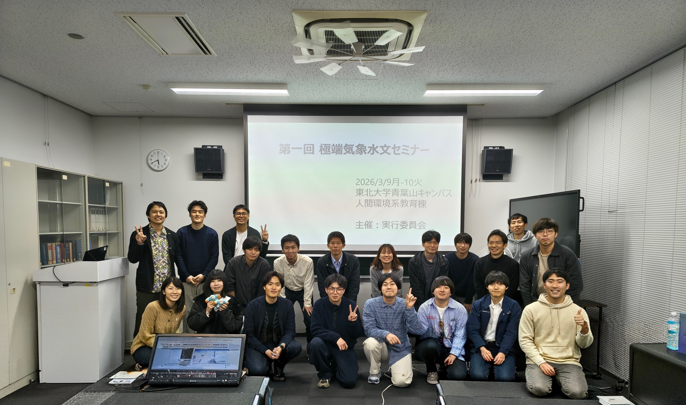
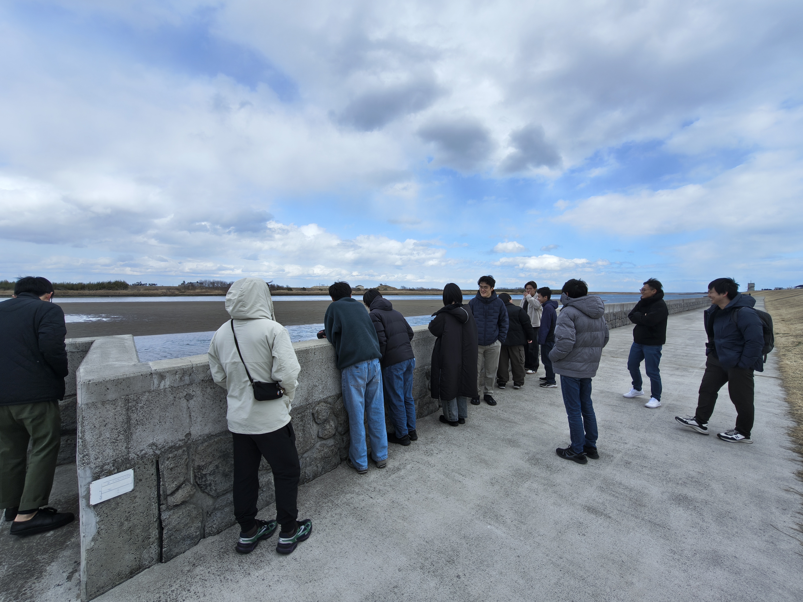
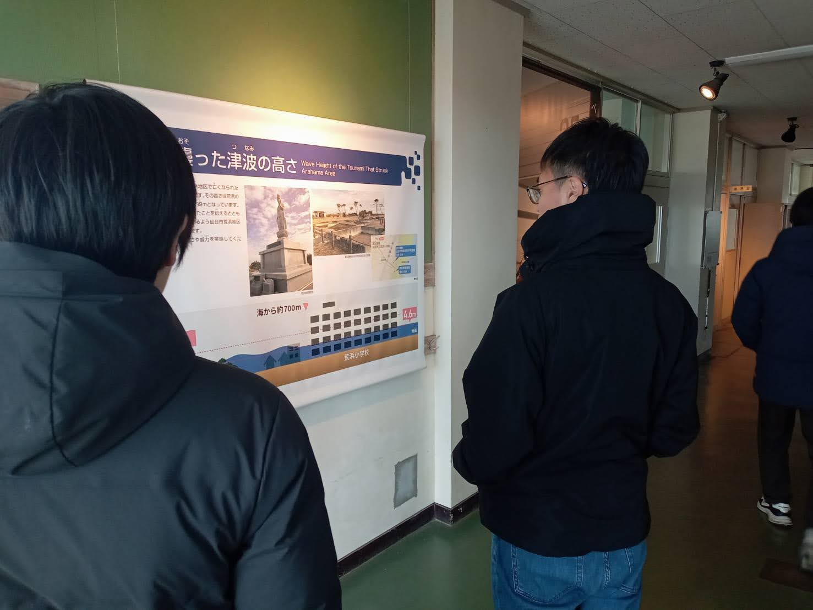
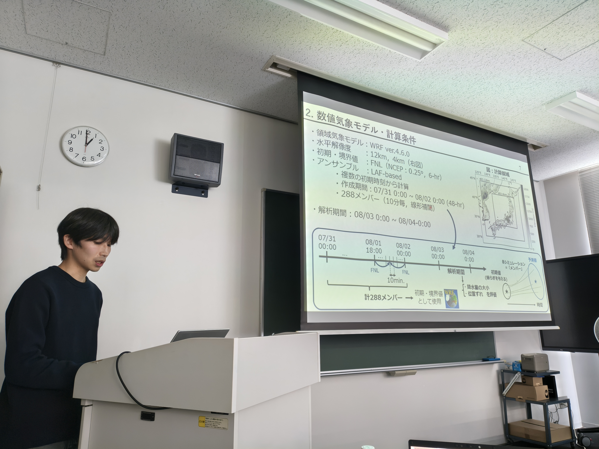
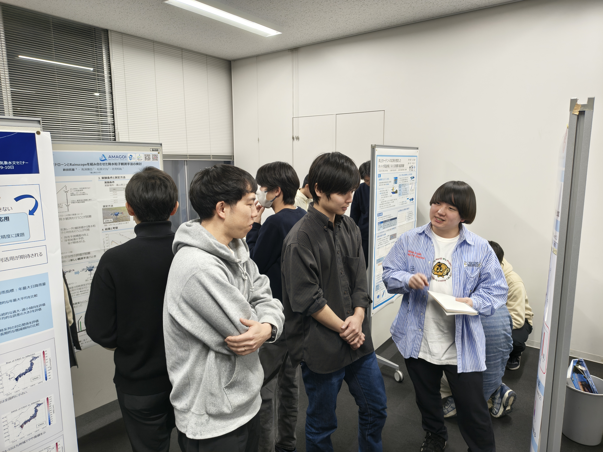
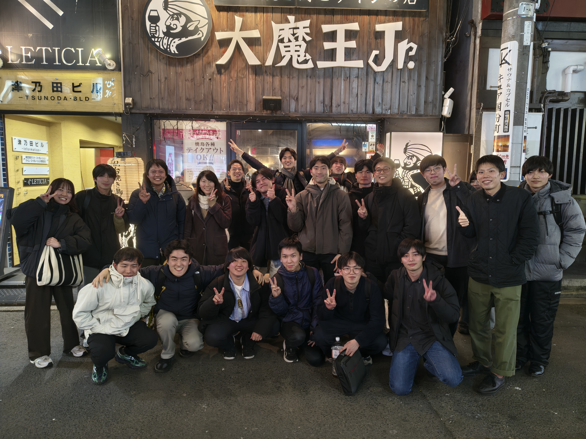
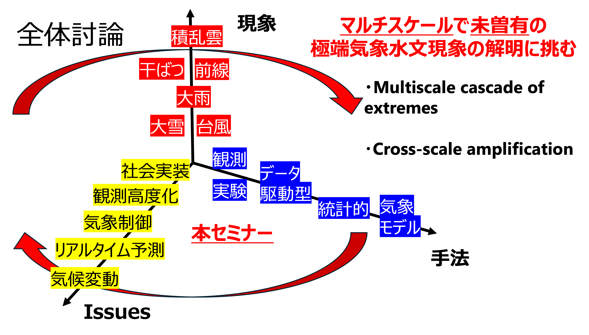

第一回 極端気象水文セミナー 開催報告
開催概要

参加者集合写真
2026年3月8日（日）から10日（火）の3日間にわたり、東北大学青葉山キャンパス（人間環境系教育棟）等にて、「第一回 極端気象水文セミナー」を開催いたしました。
本セミナーでは、全国各地から主として極端気象を対象とした気象水文学の研究者が集まり、口頭発表およびポスターセッションを通じた活発な議論が交わされました。キーワードとして、大雨・大雪・干ばつ・台風・前線などの極端現象を対象とし、物理モデル・統計解析・観測・実験を基にした研究手法、気候変動・リアルタイム予測・観測高度化・社会実装などをIssueとした多数の研究が発表・議論されました。具体的な訪問地、発表者・内容は下記のプログラムを参照してください。

治水と親水に関する現地勉強会の様子
また、初日には現地勉強会として震災遺構や復興地等の見学を実施し、参加者間の交流を深めるとともに、治水・親水に関する知見を共有する大変充実した3日間となりました。
開催にあたりご尽力いただきました皆様とご参加いただいた皆様に、心より感謝申し上げます。
極端気象水文セミナー実行委員会
平賀 優介 (東北大)・大屋 祐太 (道総研)・仲 ゆかり (京大)・田村 健太 (防災科研) 宮本 真希 (北大)
当日の様子

3/8 現地勉強会

3/9 口頭発表

3/9 ポスター発表

3/9 懇親会

3/10 口頭発表

3/10 休憩時間
プログラム
3月8日（日）：治水と親水に関する現地勉強会
- かわまちづくり施設見学
- 震災遺構 仙台市立荒浜小学校
- 名取川堤防施設
- 復興地見学（蒲生地区周辺）
3月9日（月）：極端気象水文セミナー 第1日目
- あいさつ・趣旨説明（東北大学 平賀優介）
口頭発表
- 田原亮太郎（東北大学）：「東北・北陸地方における線状降水帯と気象場の関係：数値気象モデルと長期領域再解析を用いて」
- 田村健太（防災科学技術研究所）：「2025年冬季の大雪に対する日本海の海面水温の影響」
- 仲ゆかり（京都大学）：「日本における線状降水帯の発生メカニズムと温暖化による将来変化予測」
- 神辺大地（北海道大学）：「線状降水帯に伴う降雨の日内変動特性を支配する熱力学的要因の解析」
- 玉置雄大（国立環境研究所）：「社会経済干ばつに先行する水蒸気循環場とサブ季節予測スキルの評価」
- 大野哲之（関西大学）：「線状降水帯の可能最大降水量をもたらす環境場に関する感度実験」
ポスターセッション
- 岩部幸雄（東北大学）：「日本域長期領域再解析(RRJ-Conv)による極値降雨の再現性評価」
- 鈴木克進（京都大学）：「洋上カーテンへの応用を想定したネットが風速場に与える影響の風洞実験」
- 藪田哲基（富山県立大学）：「全天候型ドローンでの降水粒子観測」
- 蓮岡慶行（北海道大学）：「線形理論を用いた地形性降雨に対する地表加熱による上昇流が降雨域に与える影響」
- 高崎昌幸（中央大学）：「九州地方を対象とした線状降水帯再現を規定する領域気象モデルWRFの境界条件の検討」
3月10日（火）：極端気象水文セミナー 第2日目
口頭発表
- 土屋日菜（東京都立大学）：「機械学習を用いた九州地方における類似した循環場に限定した線状降水帯の発現予測」
- 岡地寛季（北海道大学）：「暴風時における大気陸面相互作用と台風がもたらす地形性降雨に関する研究」
- 平賀優介（東北大学）：「気候変動と降雨の最悪シナリオの関係」
- 吉見和紘（富山県立大学）：「実証実験「人工降雪に係る予備実験」のご紹介」
- 馬渕慎也（富山県立大学）：「MP-PAWRの風速場情報を活用した短時間降雨予測手法の検討」
- 宮本真希（北海道大学）：「前線と降雨分布の相対位置に基づく流域単位の大雨発生状況」
- 大屋祐太（北海道立総合研究機構）：「XRAINを用いた降水セルの発達過程に関する統計的分類と環境場特性」
- 藤本寛生（中央大学）：「衛星データと深層学習を用いた東南アジアにおける雨量推定手法の開発」
全体討論
- 共同研究や共同プロポーザルに関する今後の方針を議論しました。

本セミナーの全体像